Warning
This component will be available in the Palette of the studio on the condition that you have subscribed to the relevant edition of Talend Big Data Studio.
|
Component family |
Big Data / MongoDB | |
|
Function |
tMongoDBOutput executes the action defined on the collection in the Mongo database based on the flow incoming from the preceding component in the Job. | |
|
Purpose |
This component executes the action defined on the collection in the Mongo database. | |
|
Basic settings |
Use existing connection |
Select this check box and in the Component List click the relevant connection component to reuse the connection details you already defined. |
|
|
Use replica set address |
Select this check box to show the Replica address table. In the Replica address table, you can define multiple Mongo database servers for failover. Available when the Use existing connection check box is not selected. |
|
|
Server and Port |
IP address and listening port of the database server. Available when the Use existing connection or Use replica set address check box is not selected. |
|
|
Database |
Name of the database. |
|
|
Required authentication |
Select this check box to enable the database authentication. |
|
|
Username and Password |
DB user authentication data. Available when the Required authentication check box is selected. |
|
|
Collection |
Name of the collection in the Mongo database. |
|
|
Drop collection if exist |
Select this check box to drop the collection if it already exists. |
|
|
Action on data |
The following operations are available: Insert: insert data. Update: update data. Upsert: update and insert data. Delete: delete data. |
|
Schema and Edit Schema |
A schema is a row description, i.e. it defines the number of fields that will be processed and passed on to the next component. If you are using Talend Open Studio for Big Data, only the Built-in mode is available. Click Edit Schema to make changes to the schema. Note that if you make changes, the schema automatically becomes built-in. Click Sync columns to retrieve the schema from the previous component connected in the Job. | |
|
|
Mapping |
Specify the parent node for the column in the Mongo database. Not available when the Generate JSON Document check box is selected in Advanced settings. |
|
Die on error |
This check box is cleared by default, meaning to skip the row on error and to complete the process for error-free rows. | |
| Advanced settings |
Generate JSON Document |
Select this check box for JSON configuration: Configure JSON Tree: click the [...] button to open the interface for JSON tree configuration. Group by: click the [+] button to add lines and choose the input columns for grouping the records. Remove root node: select this check box to remove the root node. Data node and Query node (available for update and upsert actions): type in the name of data node and query node configured on the JSON tree. They are not stored in the database and are intended solely to start the update and upsert actions. |
|
tStatCatcher Statistics |
Select this check box to collect the log data at the component level. | |
|
Usage |
tMongoDBOutput executes the action defined on the collection in the Mongo database based on the flow incoming from the preceding component in the Job. | |
|
Limitation |
Note
| |
This scenario creates the collection blog and writes post data to it.
Drop tMongoDBConnection, tFixedFlowInput, tMongoDBOutput, tMongoDBClose, tMongoDBInput and tLogRow onto the workspace.
Rename tFixedFlowInput as blog_post_data, tMongoDBOutput as write_data_to_collection, tMongoDBInput as read_data_from_collection and tLogRow as show_data_from_collection.
Link tMongoDBConnection to tFixedFlowInput using the OnSubjobOk trigger.
Link tFixedFlowInput to tMongoDBOutput using a Row > Main connection.
Link tFixedFlowInput to tMongoDBInput using the OnSubjobOk trigger.
Link tMongoDBInput to tMongoDBClose using the OnSubjobOk trigger.
Link tMongoDBInput to tLogRow using a Row > Main connection.
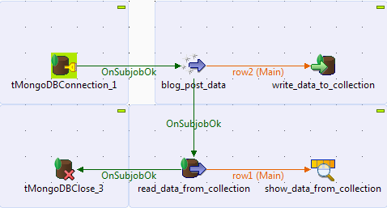
Double-click tMongoDBConnection to open its Basic settings view.

In the Server and Port fields, enter the connection details.
In the Database field, enter the name of the Mongo database.
Double-click tFixedFlowInput to open its Basic settings view.

Select Use Inline Content (delimited file) in the Mode area.
In the Content field, enter the data to write to the Mongo database, for example:
1;Andy;Open Source Outlook;Open Source,Talend;Talend, the leader of the open source world... 3;Andy;ELT Overview;ELT,Talend;Talend, the big name in the ELT circle... 2;Andy;Data Integration Overview;Data Integration,Talend;Talend, the leading player in the DI field...
Double-click tMongoDBOutput to open its Basic settings view.
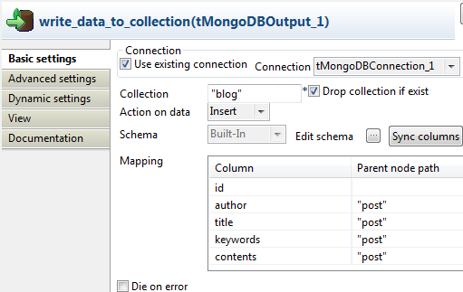Select the Use existing connection and Drop collection if exist check boxes.
In the Collection field, enter the name of the collection, namely blog.
Click the [...] button next to Edit schema to open the schema editor.
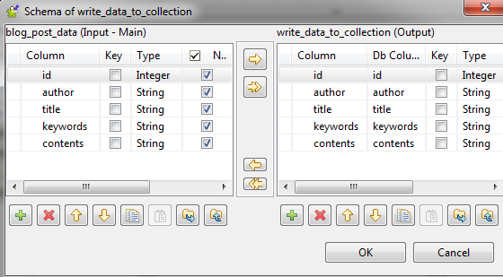Click the [+] button to add five columns in the right part, namely id, author, title, keywords and contents, with the type as Integer and String respectively.
Click
 to copy all the columns to the input table.
to copy all the columns to the input table.Click Ok to close the editor.
The columns now appear in the left part of the Mapping area.
For columns author, title, keywords and contents, enter their parent node post. By doing so, those nodes reside under the node post in the Mongo collection.
Double-click tMongoDBInput to open its Basic settings view.

Select the Use existing connection check box.
In the Collection field, enter the name of the collection, namely blog.
Click the [...] button next to Edit schema to open the schema editor.
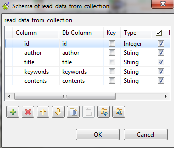Click the [+] button to add five columns, namely id, author, title, keywords and contents, with the type as Integer and String respectively.
Click OK to close the editor.
The columns now appear in the left part of the Mapping area.
For columns author, title, keywords and contents, enter their parent node post so that the data can be retrieved from the correct positions.
In the Sort by area, click the [+] button to add one line and enter id under Column.
Select asc from the Order asc or desc? column to the right of the id column. This way, the retrieved records will appear in ascending order of the id column.
Press Ctrl+S to save the Job.
Press F6 to run the Job.

Switch to the database talend and read data from the collection blog in the Mongo command line client. You can find that author, title, keywords and contents all reside under the node post. Meanwhile, the records are stored in the same order as the source input.
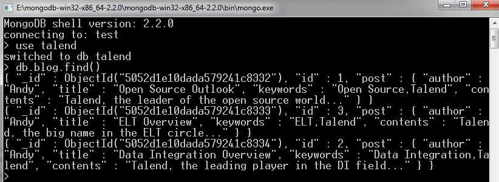
This scenario upserts the collection blog as an existing record has its author changed and a new record is added. Before the upsert, the collection blog looks like:
1;Andy;Open Source Outlook;Open Source,Talend;Talend, the leader of the open source world... 2;Andy;Data Integration Overview;Data Integration,Talend;Talend, the leading player in the DI field... 3;Andy;ELT Overview;ELT,Talend;Talend, the big name in the ELT circle...
Drop tMongoDBConnection, tFixedFlowInput, tMongoDBOutput, tMongoDBClose, tMongoDBInput and tLogRow from the Palette onto the design workspace.
Rename tFixedFlowInput as blog_post_data, tMongoDBOutput as write_data_to_collection, tMongoDBInput as read_data_from_collection and tLogRow as show_data_from_collection.
Link tMongoDBConnection to tFixedFlowInput using the OnSubjobOk trigger.
Link tFixedFlowInput to tMongoDBOutput using a Row > Main connection.
Link tFixedFlowInput to tMongoDBInput using the OnSubjobOk trigger.
Link tMongoDBInput to tMongoDBClose using the OnSubjobOk trigger.
Link tMongoDBInput to tLogRow using a Row > Main connection.

Double-click tMongoDBConnection to open its Basic settings view.
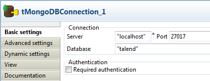In the Server and Port fields, enter the connection details.
In the Database field, enter the name of the Mongo database.
Double-click tFixedFlowInput to open its Basic settings view.
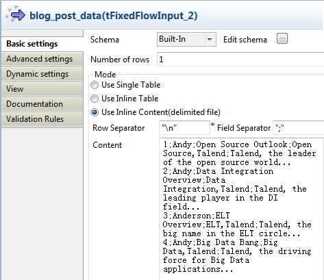Select Use Inline Content (delimited file) in the Mode area.
In the Content field, enter the data for upserting the Mongo database, for example:
1;Andy;Open Source Outlook;Open Source,Talend;Talend, the leader of the open source world... 2;Andy;Data Integration Overview;Data Integration,Talend;Talend, the leading player in the DI field... 3;Anderson;ELT Overview;ELT,Talend;Talend, the big name in the ELT circle... 4;Andy;Big Data Bang;Big Data,Talend;Talend, the driving force for Big Data applications...
As shown above, the 3rd record has its author changed and the 4th record is new.
Double-click tMongoDBOutput to open its Basic settings view.

Select the Use existing connection and Die on error check boxes.
In the Collection field, enter the name of the collection, namely blog.
Select Upsert from the Action on data list.
Click the [...] button next to Edit schema to open the schema editor.
Click the [+] button to add five columns in the right part, namely id, author, title, keywords and contents, with the type as Integer and String respectively.
Click
to copy all the columns to the input table.Click Ok to close the editor.
In the Advanced Settings view, select the Generate JSON Document check box.
Select the Remove root node check box.
In the Data node and Query node fields, enter "data" and "query".
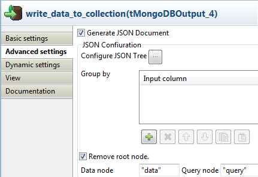Click the [...] button next to Configure JSON Tree to open the configuration interface.
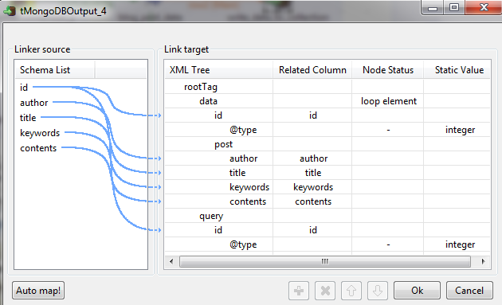Right-click the node rootTag and select Add Sub-element from the contextual menu.
In the dialog box that appears, type in data for the Data node:

Click OK to close the window.
Repeat this operation to define query as the Query node.
Right-click the node data and select Set As Loop Element from the contextual menu.
Select all the columns under the Schema list and drop them to the data node.
In the window that appears, select Create as sub-element of target node.
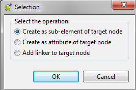Click OK to close the window.
Repeat this operation to drop the id column from the Schema list under the Query node.
Right-click the node id under data and select Add Attribute from the contextual menu.
In the dialog box that appears, type in type as the attribute name:

Click OK to close the window.
Right-click the node @type under id and select Set A Fix Value from the contextual menu.
In the dialog box that appears, type in integer as the attribute value, ensuring the id values are stored as integers in the database.

Click OK to close the window.
Repeat this operation to set this attribute for the id node under Query.
Click OK to close the JSON Tree configuration interface.
Double-click tMongoDBInput to open its Basic settings view.
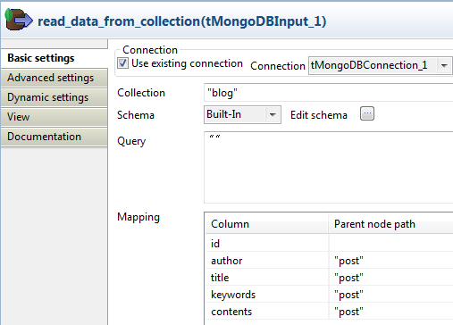Select the Use existing connection check box.
In the Collection field, enter the name of the collection, namely blog.
Click the [...] button next to Edit schema to open the schema editor.

Click the [+] button to add five columns, namely id, author, title, keywords and contents, with the type as Integer and String respectively.
Click OK to close the editor.
The columns now appear in the left part of the Mapping area.
For columns author, title, keywords and contents, enter their parent node post so that the data can be retrieved from the correct positions.
Double-click tLogRow to open its Basic settings view.

In the Mode area, select Table (print values in cells of a table for better display.